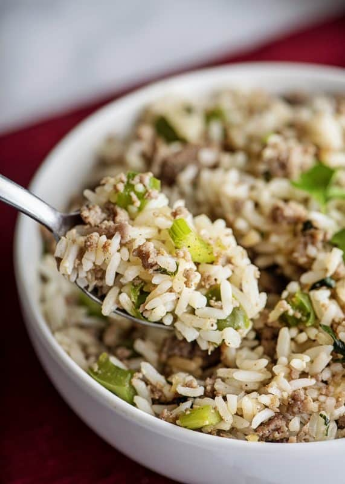

Dirty Rice

Dirty rice is a Southern staple. Historically made as a catch all for whatever bits and pieces may be leftover in the fridge, this dish serves as a sort of southern fried rice. Dirty rice can be made with any protein to become a one pot meal. Note that the chicken livers must be soaked overnight, don't forget to plan ahead!
For the Rice
- 9 Ounces Chicken Liver
- 1 Cup Milk
- 2 Tablespoons Butter
- 1/4 Cup Finely Chopped Yellow Onion
- 1/4 Cup Finely Chopped Celery
- 1/4 Cup Finely Chopped Green Bell Pepper
- 2 Teaspoons Minced Garlic
- 2 Tablespoons Brandy
- 2 Teaspoons Gumbo File
- 4 Cups Cooked Long Grain White rice
- Kosher Salt
- Cracked Black Pepper
- 1/2 Cup Finely Chopped Flat Leaf Parsley
Make the Rice
- Soak the chicken livers in the milk in the fridge overnight
- Remove the chicken livers from the milk, chop finely and set aside
- Melt the butter in a large saute pan over medium heat, add the onion, celery, bell pepper, and garlic. Saute for 3-5 minutes
- Add the chicken livers adn saute for 1 minute
- Deglaze the pan with the brandy, scraping the bottom of the with a wooden spoon and cooking for 2-3 minutes
- Add the gumbo file and fold in the rice
- Season the rice wth salt and black pepper to taste, cook while tossing to make sure to heat all the weeay through
- When hot and seasoned to your liking transfer the rice to a serving bowl, garnish with parsley and serve immediately
- Leftover rice will keep in the refrigerator for 3 days, reheat in a skillet